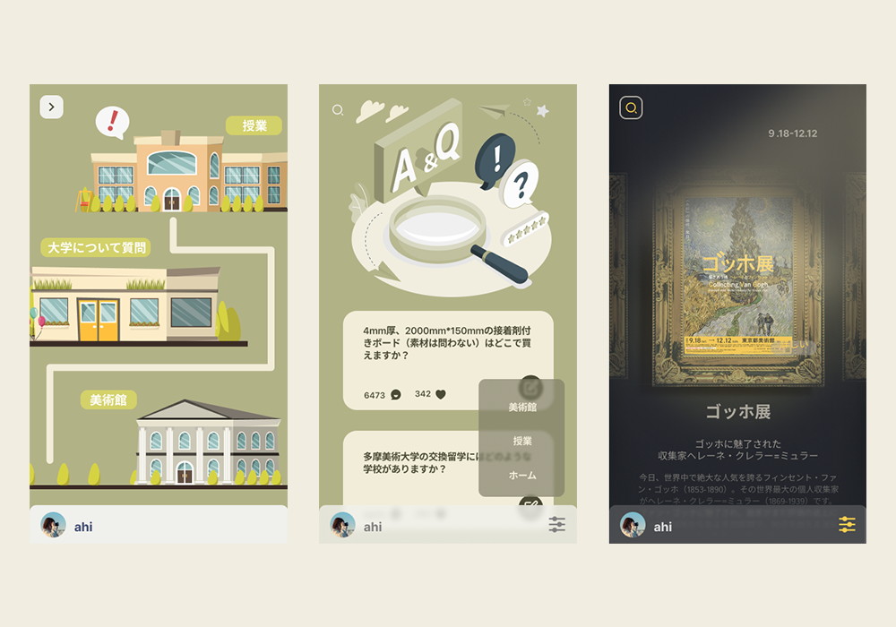
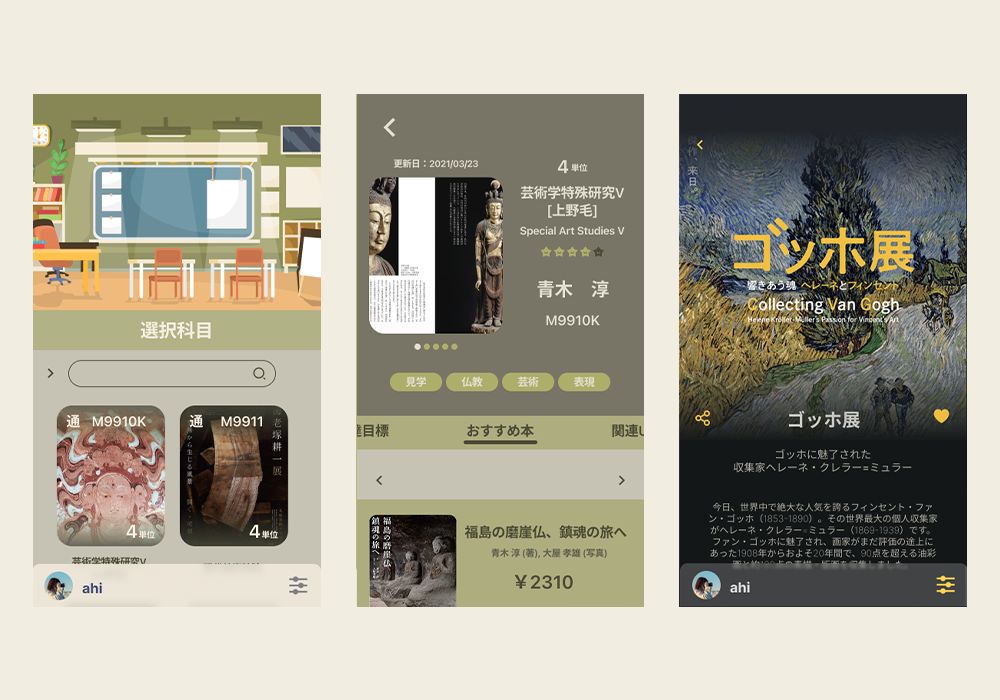
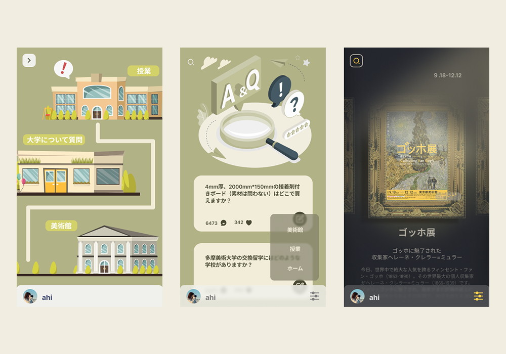
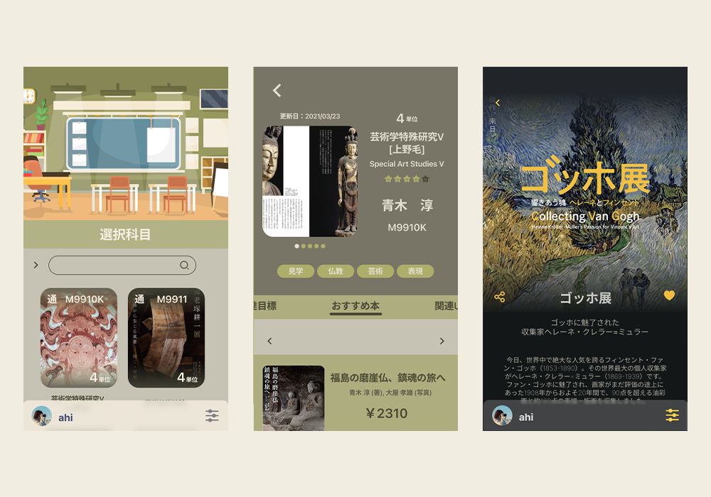

美⼤留学⽣のために、学校で専⾨についている詳しい情報を提供するサービス
王 亜菲
WANG Yafei
本研究では、⽇本の美⼤に う留学⽣がsmartphoneのIT技術を使って、美⼤⽣の⽣ 活共同体を形成する。このコミュニティで、もはや時 や空 に制限されるものではな い。 美⼤留学⽣が異国の学校で良い勉強環境を提供し、学校で留学⽣悩み相 の 仕事を分担する。 来⽇したばかりの留学⽣が学習環境に慣れ、先⽣⽅とのコミュニケーションを図り、不安や緊張を 減すること留学⽣が异国の⽣活環境によりよく適応ができるように⽬指である。